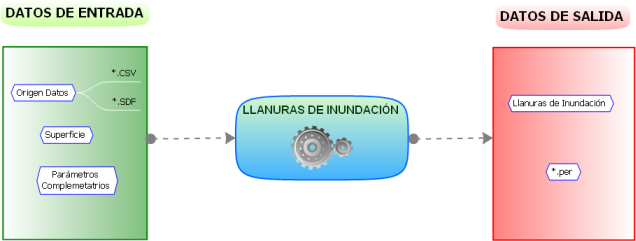
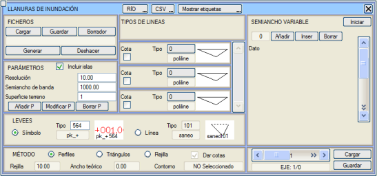
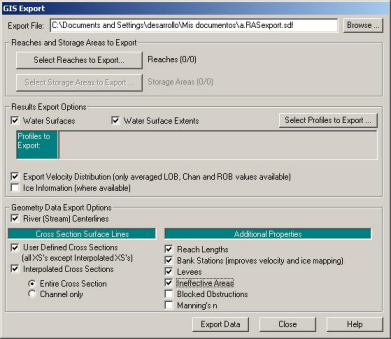
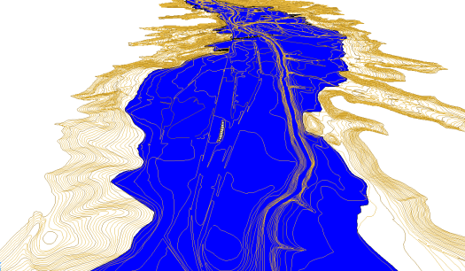

Genel Bilgiler
Bu seçenekle, HEC-RAS®'dan gelen .sdf veya bir hesap tablosundan gelen .csv dosyalarından yola çıkarak, nehirlerin ve belirli bir kottaki noktasal elemanların oluşturduğu taşkın sahalarını harita üzerinde hesaplamak ve çizmek mümkündür. Program hem su basan alanları hem de adacıkları gösterir.

[Taşkın Sahaları] butonuna tıklandığında aşağıdaki iletişim kutusu açılır:

.csv Formatı
Bu formatta, en azından Akarsu/Nehir, X, Y, AZİMUT ve Profil sütunlarını içeren bir başlık olacaktır ve ardından gerektiği kadar kot olacaktır. Tüm bu sütunlar noktalı virgül <;> ile ayrılmalıdır. METİN adlı son sütun, profillere bir metin eklemek için kullanılır. Diğer sütunlar istenen ada sahip olabilir, ancak metin sütunu zorunlu olarak METİN olarak adlandırılmalıdır ve 100 karaktere kadar etiketler kabul edilir. Aşağıda bir örnek gösterilmektedir:
AKARSU/NEHİR;X;Y;AZİMUT;Profil;Kot (T_50);Kot (T_100);Kot (T_500);METİN
GUADARRANQUE;281744.03;4017552.41;225.05;62;11.12;12.57;14.73;
GUADARRANQUE;281631.09;4017280.38;235.38;61;10.85;12.24;14.22; Profil 61
.sdf Formatı
Bu format, HEC-RAS® programına özgüdür ve tek bir dosyada birden fazla nehri kabul eder. Ayrıca, program PROFILE (PROFILE NAMES) adlarını dikkate alarak bunları iletişim kutusunda, kotlar bölümünde gösterir. Eğer .sdf dosyası çalışma için birden fazla kotla gelirse, bunlar da taşkın sahasının oluşturulması için dikkate alınır.
ISTRAM®/ISPOL®'ün doğru okuması için gerekli tüm bilgileri içeren bir .sdf dosyası elde etmek için, HEC-RAS® programı içinde File → Export GIS Data menüsüne gidilmeli ve iletişim kutusu resimde gösterildiği gibi yapılandırılmalıdır (kutu sürüme göre değişebilir).
Genel Seçenekler
[NEHİR] / [NOKTA]
|
Bu değiştirilebilir düğme, bir nehrin veya belirli bir kottaki noktasal bir elemanın neden olduğu bir taşkın sahasının hesaplanmasını seçmeyi sağlar. İkinci durumda sadece şunlar gereklidir:
- Taşkının başlangıç noktası.
- Analiz için sınır konturu.
- Taşkını sınırlayacak çizgi tipi.
- Hesaplama yöntemi (profillere göre izin verilmez).
|
[CSV] / [SDF]
|
Düğmenin gösterdiği dosya türünü seçmeyi sağlar.
|
[Etiketleri Göster] [Etiketleri Gizle]
|
Her bir profile metin ekleyebileceğiniz ve bunları farklı stiller ve boyutlarla etiketleyebileceğiniz bir kutu açmayı sağlar. Bu metin doğrudan .csv dosyasında oluşturulabilir. .csv'den etiket verilerini alması için, son sütununun METİN olarak adlandırılması gerekir. 100 karaktere kadar etiketler kabul edilir. Bir örnek şöyle olabilir:
AKARSU/NEHİR;X;Y;AZİMUT;PROFİL;KOT_MNN;METİN
COLLADO;262260.561;4004940.600;384.136;1;100.089;KM -0.000 // 02/01/2003
COLLADO;262244.430;4005035.329;14.178;2;88.099;KM -100.000 // 03/01/2003
|
[Yükle]
|
.sdf veya .csv formatında bir dosya yükler.
|
[Kaydet]
|
Önceden yüklenmiş verileri bir .csv dosyasına kaydeder.
|
[Taslak]
|
.sdf dosyaları için, HEC-RAS®'ın oluşturduğu taşkın çizgisini ekranda gösterebilmek için sadece WATER SURFACE EXTENTS alanının bilgileri yüklenecektir.
|
[Oluştur]
|
Seçilen kot tiplerinin ve seçilen çizgi tiplerinin taşkın yüzeylerini oluşturur. Taşkın sahaları oluşturulduğunda, ISTRAM ®/ISPOL® profillerinin oluşturulup oluşturulmayacağı sorulur. Yanıt evet ise, araziye ve su yüzeyine karşı profiller oluşturulur.
|
[Geri Al]
|
Su yüzeyleri için oluşturulan çizgileri siler.
|
[P Ekle]
|
Bu düğme bir profil eklemeyi sağlar. Üzerine bastıktan sonra, yeni profilin eklenmesini istediğiniz segmenti (mevcut 2 profil arasında) seçmelisiniz. Bundan sonra, yerleştirmek istediğiniz noktaya tıklamalı ve ayrıca azimutu grafiksel olarak belirtmelisiniz.
|
[P Değiştir]
|
Bir profili değiştirmek için, onu etiketleyen numaraya tıklamak yeterlidir. Seçildikten sonra, nokta değiştirilebilir ve son olarak azimut ayarlanır.
|
[P Sil]
|
Bu düğmeye bastıktan sonra bir profilin numarasına tıklarsanız, otomatik olarak silinir.
|
Hesaplama Parametreleri
| Adacıkları Dahil Et |
Adacıkların hesaplanmasını etkinleştirir.
|
Çözünürlük
|
Profilleri hesaplamak için aralığı ayarlamayı sağlar.
|
Yarı Bant Genişliği
|
Profillere göre yöntem için kullanılır. Program değişken bir yarı bant genişliğini kabul eder, böylece her profile bir yarı bant genişliği atanır ve dolayısıyla yarı bant genişliği olarak belirlenen değer göz ardı edilir. Bu değişken yarı bant genişlikleri, alt kısımdaki [Yükle] ve [Kaydet] butonları aracılığıyla .sma dosyaları ile kaydedilebilir ve geri yüklenebilir.
|
Arazi Yüzeyi
|
Bu alanda referans yüzeyi belirtilir.
|
ÇİZGİ TİPLERİ
|
Menünün bu bölümündeki üç etkinleştirme kutucuğu, genellikle tekrarlama periyotlarına karşılık gelen, en fazla temsil edilebilecek üç kot tipinin gösterimini etkinleştirmeyi sağlar. Varsayılan olarak kullanılan çizgiler, içlerini dolduran, su yüzeylerini temsil etmeye uygun çizgilerdir.
|
YÖNTEM
|
Taşkın sahaları sorununu ele almak için 3 yöntem vardır:
Hepsi benzer sonuçlar gösterir; bazıları hızlı hesaplamalar için uygunken, diğerleri daha hassas ancak daha yavaş hesaplamalar içindir.
|
Sedde (Leeves)
.sdf dosyalarını HEC-RAS®'dan içe aktarırken, içinde tanımlanmış olan levees (seddeler), yani suyun GEÇMEDİĞİ çizgiler içe aktarılır. Kullanıcı içe aktarma modunu seçebilir:
- Sembol: Her seddenin konumunda, kotuyla birlikte bir sembol oluşturacaktır. Bu seçenek yalnızca gösterim olarak kullanışlıdır.
- Çizgi: Sağ taraftaki levees'leri birleştiren bir çizgi ve sol taraftaki levees'leri birleştiren başka bir çizgi oluşturacaktır. Bu seçenek, grid ve üçgenleme yöntemlerinin kullanımı için bir kapalı alan oluşturmak için çok kullanışlıdır. Kullanıcının kapalı alanın iki kenarı olur ve geri kalanını, her iki levees çizgisini birleştirerek veya yeni noktalar ekleyerek tamamlaması gerekir.
Enkesitlerle Hesaplama
Bu yöntem, çok fazla kıvrımı olan nehirler için uygun DEĞİLDİR, çünkü bu durumda profiller kesişir ve sonuçlar hatalı olabilir. Bu menüde, bu ilk yöntem için girilmesi gereken veriler şunlardır:
- [Yükle] butonu aracılığıyla taşkın kotları dosyası seçilecektir. Dosya (.csv veya .sdf) yüklendikten sonra, menünün orta kısmında okunan her kot tipi için bir çizgi tipi yüklenecektir.
- Yapılandırılacak diğer veriler çözünürlük, yarı bant genişliği ve arazi yüzeyidir. Varsayılan olarak, tüm profiller için Yarı Bant Genişliği alanında belirlenen yarı bant genişliği dikkate alınacaktır; ancak istenirse, her profil için menünün sağ tarafında (değişken yarı bant genişliği) değiştirilebilir.
- Profilleri eklemek, değiştirmek ve silmek mümkündür. Bu, yüklenen dosyanın yeterli detaya sahip olmaması durumunda ilginç olabilir.
- Bir profil "yapay" olduğunda, yani kullanıcı tarafından eklendiğinde veya değiştirildiğinde, kırmızı renkte gösterilir. Eğer .csv dosyasından olduğu gibi okunan bir profil ise, mavi renkte gösterilir.
- Adacıkları oluştururken, ilgili kotun onay kutucuğu aracılığıyla istenen kot seçilebilir. Eğer Adacıkları Dahil Et seçeneği devre dışı bırakılmışsa, adacıkların konturları pembe renkte oluşturulur. Etkinleştirilmişse, adacıklar o kotun konturu içinde oluşturulur.
Üçgenleme ile Hesaplama
Bu ikinci yöntem, adacık oluşturmada en yüksek detay seviyesine ulaşan yöntemdir, ancak aynı zamanda en yavaşıdır. İşleyişi, taşkın sahalarını elde etmek için seçilen kontur içindeki araziyi üçgenlemeye dayanır.
Bu yöntemin uygulanması için izlenecek metodoloji şöyledir:
- .csv veya .sdf dosyasını yükleyin.
- Kotları seçin.
- Üçgenler seçeneğini etkinleştirin.
- Haritada bulunmayan bir çizgi tipinde bir çevre çizgisi çizin.
- Çalışma alanını sınırlayacak konturu seçin.
- Nehrin teorik genişliğinin değerini belirleyin. Bu alan 0 değeriyle bırakılabilir, ancak nehrin ortalama genişlik değerini doldurarak daha iyi sonuçlar elde edilir.
- Eğer taşkın sahalarının kenarlarına yüzeyin kotunu vermek isteniyorsa, Kotları Ver seçeneğini etkinleştirin.
- [Oluştur] butonuna basın.
Grid (Izgara) ile Hesaplama
Bu yöntemin prosedürü üçgenlerinkine benzer, ancak üçgenleme için tüm noktaları kullanmak yerine, hayali bir grid kullanır. Bu yöntem, profillere göre yöntemden daha yüksek bir hassasiyet seviyesine ulaşır, ancak üçgenleme yönteminden daha düşük bir hassasiyete sahiptir. Grid yöntemi, oldukça iyi bir sonuç elde ederek üçgenleme yöntemini hız açısından geride bırakır.
Bu yöntemin uygulanması için izlenecek metodoloji şöyledir:
- .csv veya .sdf dosyasını yükleyin.
- Kotları seçin.
- Grid seçeneğini etkinleştirin.
- Haritada bulunmayan bir çizgi tipinde bir çevre çizgisi çizin.
- Çalışma alanını sınırlayacak konturu seçin.
- Grid alanı değerini belirleyin. Bu alanda, üçgenleme için kullanılacak gridin her bir kare hücresinin boyutu belirlenir. Ne kadar küçük olursa sonuç o kadar hassas olur, ancak elde edilmesi de o kadar yavaş olur.
- Nehrin teorik genişliğinin değerini belirleyin. Bu alan 0 değeriyle bırakılabilir, ancak nehrin ortalama genişlik değerini doldurarak daha iyi sonuçlar elde edilir.
- Eğer taşkın sahalarının kenarlarına yüzeyin kotunu vermek isteniyorsa, Kotları Ver kutucuğunu etkinleştirin.
- [Oluştur] butonuna basın.

Taşkın sahası örneği
|